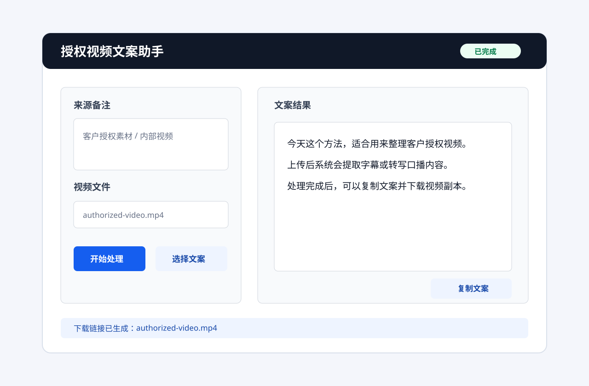

电脑端
Windows 客户版已经可下载，适合本地处理和客户试用。
电脑端 · 手机端 · 平板端
支持上传自有视频或客户授权素材，提取字幕和口播文案。电脑可下载客户版，手机和平板走网页版/PWA 与微信小程序入口。
SHA256: 2686B5BEB443C40AE23FCCE8209CCA0654926CA84FDE3EE9297C515C8BAA819A

全平台方案
Windows 客户版已经可下载，适合本地处理和客户试用。
使用网页版/PWA 上传视频，安卓、iPhone、iPad、电脑浏览器都能打开。
小程序可接收聊天中的视频文件；视频号卡片通常只能记录来源，不能直接拿到原视频。
合规说明
本工具不提供绕过平台下载、抓取第三方视频、擦除第三方水印等能力。若没有自动转写密钥，也可以补传 .txt、.srt 或 .vtt 文案文件。